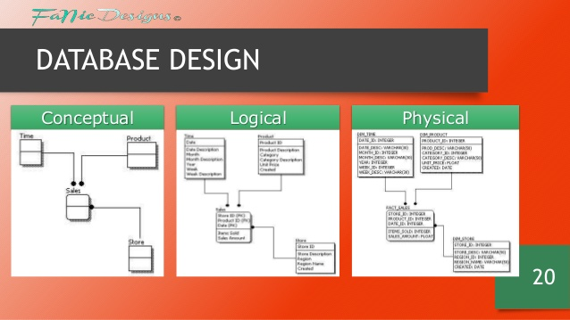

Multimedia Database Systems and Design
Database design is the process of producing a detailed data model of database. This data model contains all the needed logical and physical design choices and physical storage parameters needed to generate a design in a data definition language, which can then be used to create a database. A fully attributed data model contains detailed attributes for each entity.
The term database design can be used to describe many different parts of the design of an overall database system. Principally, and most correctly, it can be thought of as the logical design of the base data structures used to store the data. In the relational model these are the tables and views. In an object database the entities and relationships map directly to object classes and named relationships. However, the term database design could also be used to apply to the overall process of designing, not just the base data structures, but also the forms and queries used as part of the overall database application within the database management system (DBMS).
